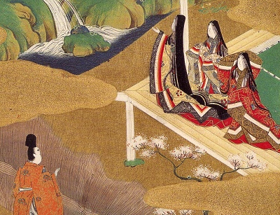

|  | Genji Monogatariby Lady Murasaki Shikibutr. by Suematsu Kencho[1900] |
Genji Monogatari, or the Tale of Genji, is a classic work of Japanese fiction from the tenth century. Written by a noblewoman, Lady Murasaki, Genji is a milestone in world literature. It is a gateway into the courtly life of 10th century feudal Japan, during the Heian period. It has been called the first novel, and the writer, Lady Murasaki, is considered a pioneer of women's literature. This was the first English translation of Genji, an abridgement which includes chapters 1 through 17 (out of 54). It is the only one in the public domain in most countries. Successive translations by Arthur Waley, Edward Seidensticker, and Royall Tyler are more complete, and have been praised critically.
Production Notes: This translation, originally published in 1882, was extracted from a reprint in Japanese Literature, Colonial Press [1900]. A short, unrelated, section of translations of Japanese poetry in that book was excluded from this etext.--John Bruno Hare, December 31st, 2008.
Title Page
Table of Contents
Introduction
Chapter I: The Chamber of Kiri
Chapter II: The Broom-Like Tree
Chapter III: Beautiful Cicada
Chapter IV: Evening Glory
Chapter V: Young Violet
Chapter VI: Saffron Flower
Chapter VII: Maple Fete
Chapter VIII: Flower-Feast
Chapter IX: Hollyhock
Chapter X: Divine Tree
Chapter XI: Villa of Falling Flowers
Chapter XII: Exile at Suma
Chapter XIII: Exile at Akashi
Chapter XIV: The Beacon
Chapter XV: Overgrown Mugwort
Chapter XVI: Barrier House
Chapter XVII: Competitive Show of Pictures